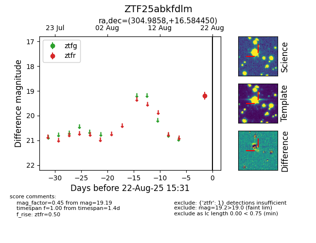

Target ZTF25abkfdlm at 2025-08-22 16:16, see:
FINK: fink-portal.org/ZTF25abkfdlm
Lasair: lasair-ztf.lsst.ac.uk/objects/ZTF25abkfdlm
ALeRCE: alerce.online/object/ZTF25abkfdlm
alt names
ZTF25abkfdlm (ztf,alerce)
coordinates:
equatorial (ra, dec) = (304.9858,+16.58445)
galactic (l, b) = (58.1770,-11.01807)
photometry
last atlaso=18.96, ztfr=19.19
14 atlaso, 1 ztfr detections
